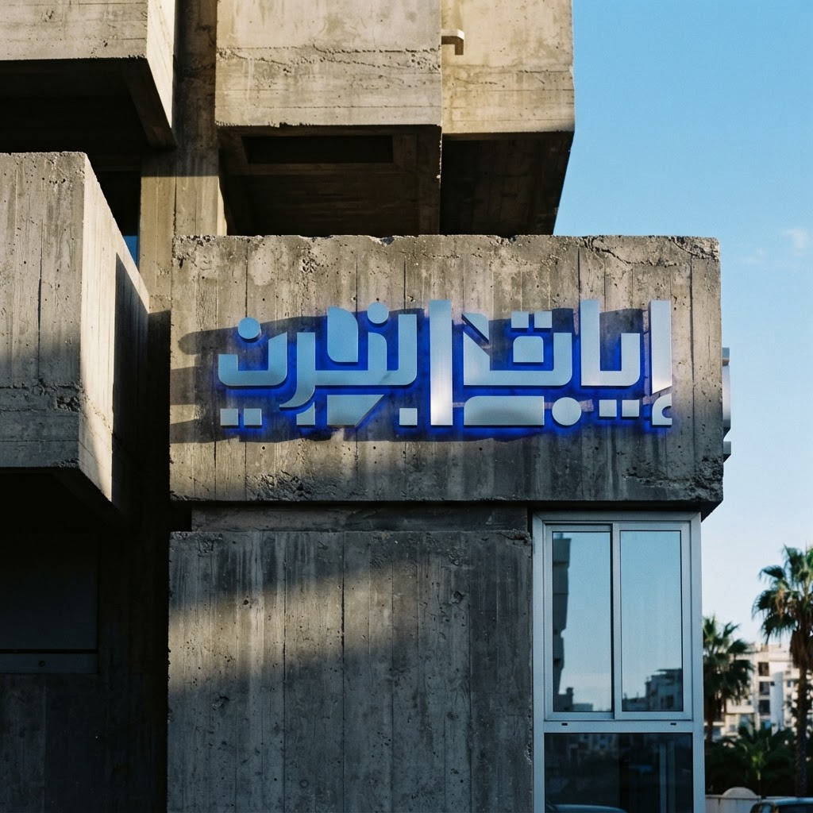
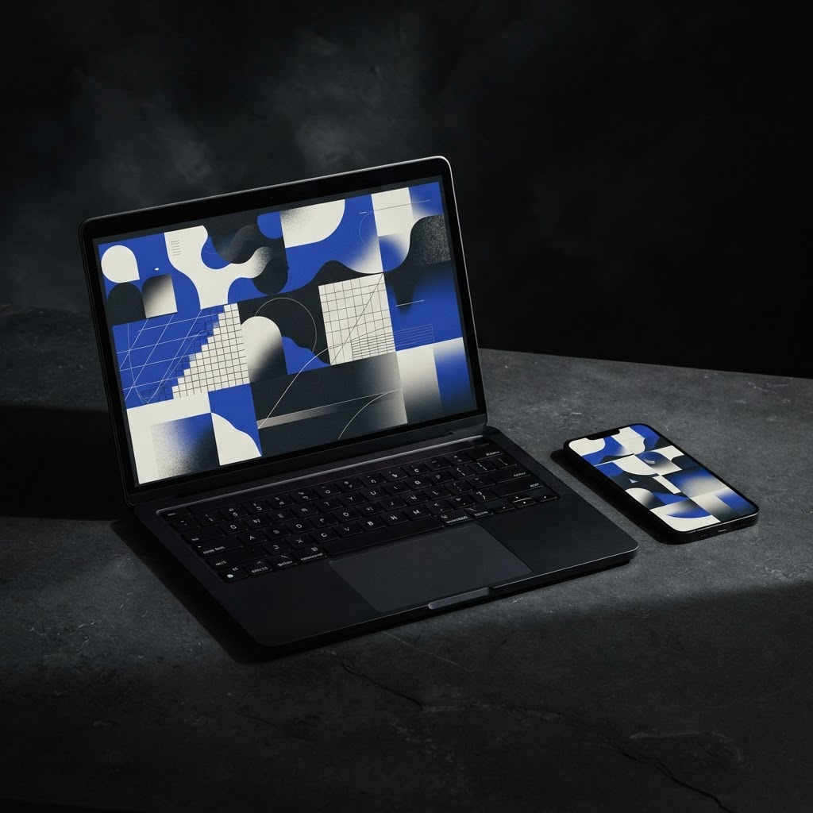
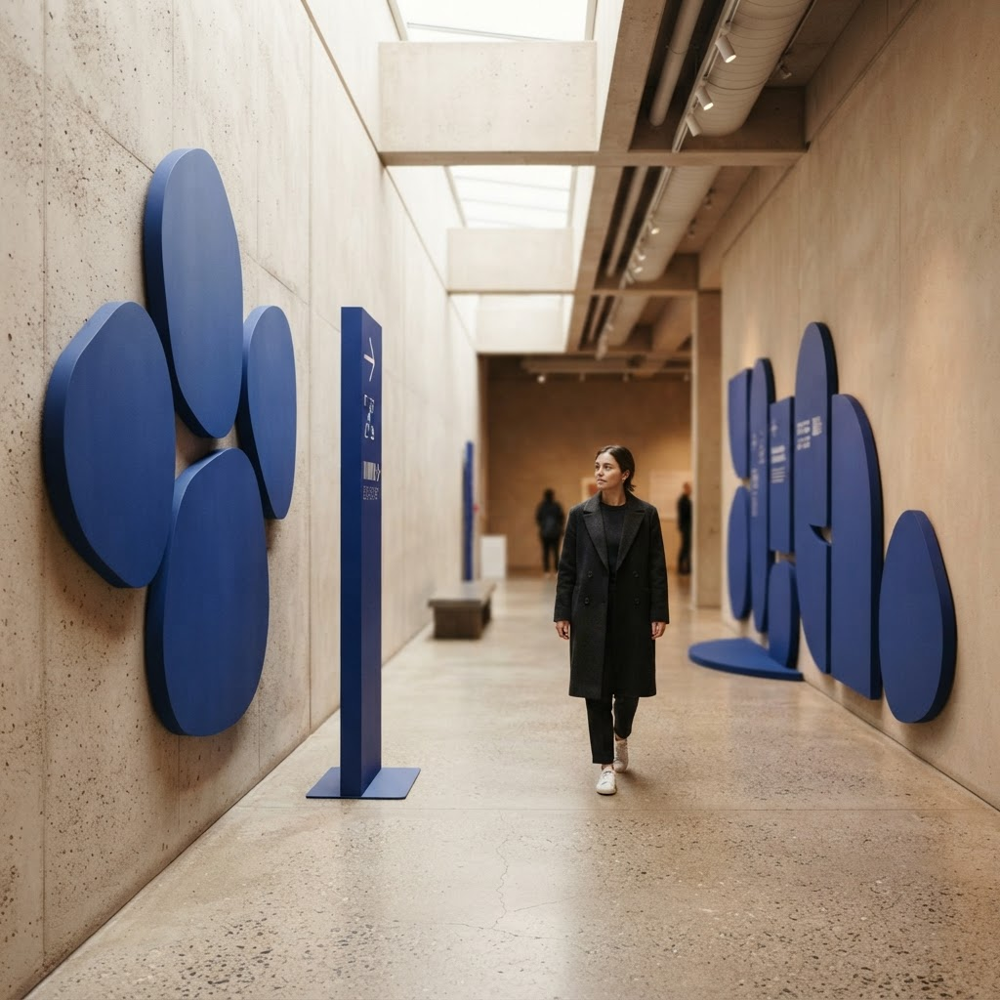
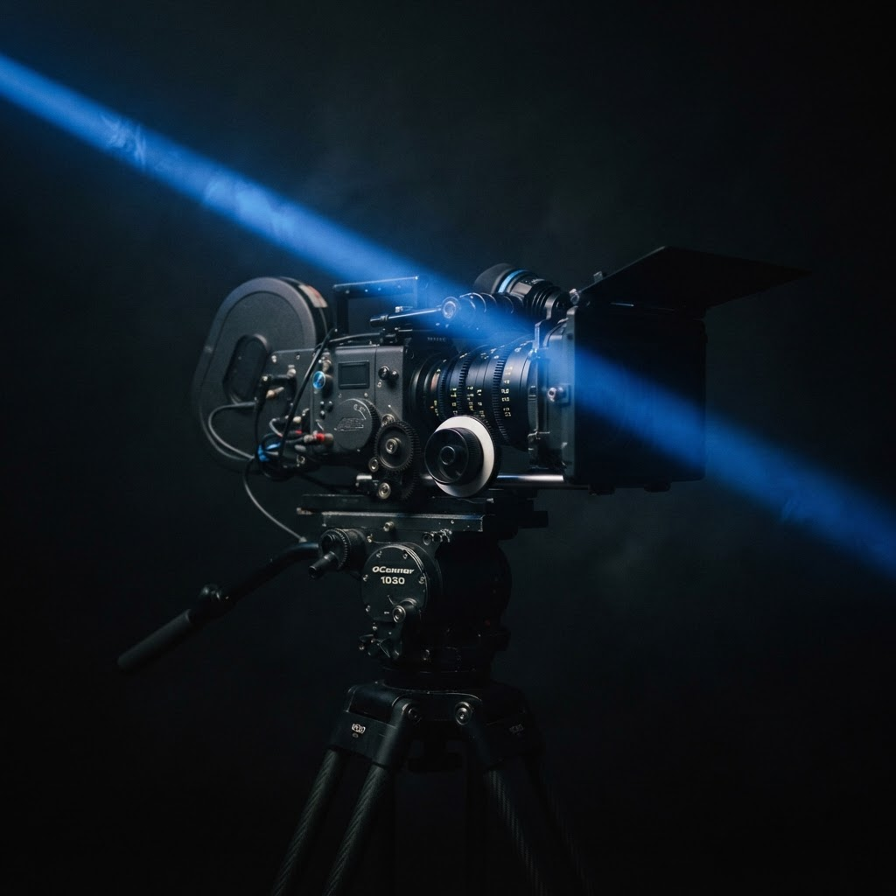

WORK / SELECTED PIECES
Every project is a
signed piece
of work.
From signage and identity to websites and film, delivered locally and nationwide. Explore the work by discipline.

YOUR
MARKIDENTITY / ALGIERS

WITH
INTENTDIGITAL / NATIONWIDE

INTO
THE BRANDENVIRONMENT / ORAN

THE
STORYPRODUCTION / ALGIERS
No signed pieces in this discipline yet. Tell us what you're building and make the next one.